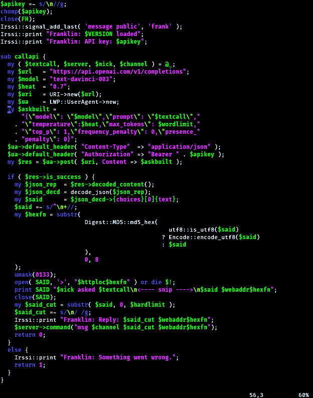
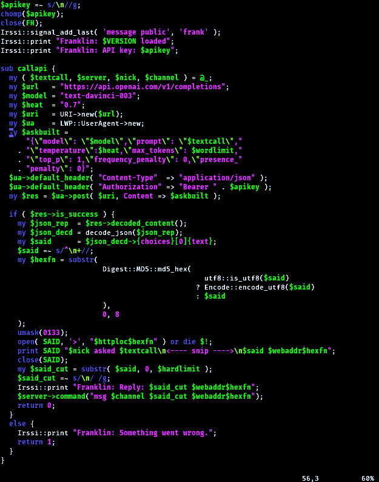

Franklin is a ChatGPT backed IRC bot
Frankie, our friendly artifically intelligent kitty. 

Previous interactions
Forgive my laziness, but this is a raw folder full of responses Franklin has made to users.
News
March 25th 2023: We have been added to the waitlist to use GPT4!
April 24th 2023: I've beautified the reponses with
.html, so they're not just simple raw text files anymore.
I hope that is appriciated more than hated, but for those who hate it, or are trying to download the
responses for whatever reason, I still host all the responses in .txt format (including newly genearted
ones).April 27th 2023: I have upgraded Franklin to call on the GPT 3.5 Turbo now, instead of GPT3 with the davinci model we were previously running. Responses should be faster and more acurate as a result.
Franklin runs inside irssi.
Setup
-
Get it on GitHub
-
You should configure
franklin.plto autoload on irssi start, and optionally configure your channel autojoins. -
Create an API key, then put it in a file called
api.keyin the scripts working directory. -
You’ll need to set up a webserver with a directory under it’s root called
said(usually something like/var/www/html/said/), that is writable by the franklin.pl script. Franklin should set the umask correctly for the files automatically. - ...skipping 1 line
-
Edit any variables in franklin.pl you need to, such as the domain name of your server where the long-text is hosted.
-
Finally, test it by calling Franklin: in chat.
Debugging
… Now test the bot by calling it with “Franklin: print me a test message” in channel (do this from a dif ferent nick, not Franklin’s nick!)
Authors
oxagast
Thanks to people who asked for features or found bugs that were fixed:
dclaw, proge, CerebraNet, atg and more…